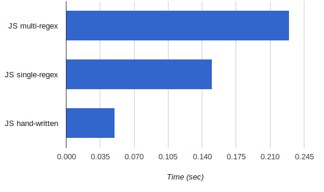

A few weeks ago I wrote about the comparison between regex-based lexers in Python and Javascript. Javascript running on Node.js (V8) ended up being much faster than Python, and in both languages a speed improvement could be gained by switching to a single regex and letting the regex engine do the hard work.
However, in the real world you'll find that most lexers (particularly lexers for real programming languages) are not written that way. They are carefully hand-written to go over the input and dispatch to the appropriate token handling code depending on the first character encountered.
This technique makes more sense for complex languages because it's much more flexible than regexes (for instance, representing nested comments with regexes is a big challenge). But I was curious also about its performance implications.
So I hacked together a hand-written lexer for exactly the same language used in the previous benchmark and also exercised it on the same large file to make sure the results are correct. Its runtime, however, surprised me. Here's the runtime of lexing a large-ish document (smaller is better):
I was expecting the runtime to be much closer to the single-regex version; in fact I was expecting it to be a bit slower (because most of the regex engine work is done at a lower level). But it turned out to be much faster, more than 2.5x. Another case of the real world beating intuition.
I was lazy to look, but if V8's regex implementation is anything like Python's, then alternation of many options (foo|bar) is not as efficient as one might expect because the regex engine does not use real DFAs, but rather backtracking. So alternation essentially means iteration deep in the regex engine. On the other hand, the hand-written code seems like something quite optimizable by a JIT compiler like V8 (the types are simple and consistent) so there's a good chance it got converted into tight machine code. Throw some inlining in and the speed is not very unlikely.
Anyway, here is the hand-written lexer. It's significantly more code than the regex-based ones, but I can't say it was particularly difficult to write - the main part took a bit more than an hour, or so. If you have any additional ideas about the speed difference, I'll be happy to hear about them.
'use strict';
var Lexer = exports.Lexer = function() {
this.pos = 0;
this.buf = null;
this.buflen = 0;
// Operator table, mapping operator -> token name
this.optable = {
'+': 'PLUS',
'-': 'MINUS',
'*': 'MULTIPLY',
'.': 'PERIOD',
'\\': 'BACKSLASH',
':': 'COLON',
'%': 'PERCENT',
'|': 'PIPE',
'!': 'EXCLAMATION',
'?': 'QUESTION',
'#': 'POUND',
'&': 'AMPERSAND',
';': 'SEMI',
',': 'COMMA',
'(': 'L_PAREN',
')': 'R_PAREN',
'<': 'L_ANG',
'>': 'R_ANG',
'{': 'L_BRACE',
'}': 'R_BRACE',
'[': 'L_BRACKET',
']': 'R_BRACKET',
'=': 'EQUALS'
};
}
// Initialize the Lexer's buffer. This resets the lexer's internal
// state and subsequent tokens will be returned starting with the
// beginning of the new buffer.
Lexer.prototype.input = function(buf) {
this.pos = 0;
this.buf = buf;
this.buflen = buf.length;
}
// Get the next token from the current buffer. A token is an object with
// the following properties:
// - name: name of the pattern that this token matched (taken from rules).
// - value: actual string value of the token.
// - pos: offset in the current buffer where the token starts.
//
// If there are no more tokens in the buffer, returns null. In case of
// an error throws Error.
Lexer.prototype.token = function() {
this._skipnontokens();
if (this.pos >= this.buflen) {
return null;
}
// The char at this.pos is part of a real token. Figure out which.
var c = this.buf.charAt(this.pos);
// '/' is treated specially, because it starts a comment if followed by
// another '/'. If not followed by another '/', it's the DIVIDE
// operator.
if (c === '/') {
var next_c = this.buf.charAt(this.pos + 1);
if (next_c === '/') {
return this._process_comment();
} else {
return {name: 'DIVIDE', value: '/', pos: this.pos++};
}
} else {
// Look it up in the table of operators
var op = this.optable[c];
if (op !== undefined) {
return {name: op, value: c, pos: this.pos++};
} else {
// Not an operator - so it's the beginning of another token.
if (Lexer._isalpha(c)) {
return this._process_identifier();
} else if (Lexer._isdigit(c)) {
return this._process_number();
} else if (c === '"') {
return this._process_quote();
} else {
throw Error('Token error at ' + this.pos);
}
}
}
}
Lexer._isnewline = function(c) {
return c === '\r' || c === '\n';
}
Lexer._isdigit = function(c) {
return c >= '0' && c <= '9';
}
Lexer._isalpha = function(c) {
return (c >= 'a' && c <= 'z') ||
(c >= 'A' && c <= 'Z') ||
c === '_' || c === '$';
}
Lexer._isalphanum = function(c) {
return (c >= 'a' && c <= 'z') ||
(c >= 'A' && c <= 'Z') ||
(c >= '0' && c <= '9') ||
c === '_' || c === '$';
}
Lexer.prototype._process_number = function() {
var endpos = this.pos + 1;
while (endpos < this.buflen &&
Lexer._isdigit(this.buf.charAt(endpos))) {
endpos++;
}
var tok = {
name: 'NUMBER',
value: this.buf.substring(this.pos, endpos),
pos: this.pos
};
this.pos = endpos;
return tok;
}
Lexer.prototype._process_comment = function() {
var endpos = this.pos + 2;
// Skip until the end of the line
var c = this.buf.charAt(this.pos + 2);
while (endpos < this.buflen &&
!Lexer._isnewline(this.buf.charAt(endpos))) {
endpos++;
}
var tok = {
name: 'COMMENT',
value: this.buf.substring(this.pos, endpos),
pos: this.pos
};
this.pos = endpos + 1;
return tok;
}
Lexer.prototype._process_identifier = function() {
var endpos = this.pos + 1;
while (endpos < this.buflen &&
Lexer._isalphanum(this.buf.charAt(endpos))) {
endpos++;
}
var tok = {
name: 'IDENTIFIER',
value: this.buf.substring(this.pos, endpos),
pos: this.pos
};
this.pos = endpos;
return tok;
}
Lexer.prototype._process_quote = function() {
// this.pos points at the opening quote. Find the ending quote.
var end_index = this.buf.indexOf('"', this.pos + 1);
if (end_index === -1) {
throw Error('Unterminated quote at ' + this.pos);
} else {
var tok = {
name: 'QUOTE',
value: this.buf.substring(this.pos, end_index + 1),
pos: this.pos
};
this.pos = end_index + 1;
return tok;
}
}
Lexer.prototype._skipnontokens = function() {
while (this.pos < this.buflen) {
var c = this.buf.charAt(this.pos);
if (c == ' ' || c == '\t' || c == '\r' || c == '\n') {
this.pos++;
} else {
break;
}
}
}